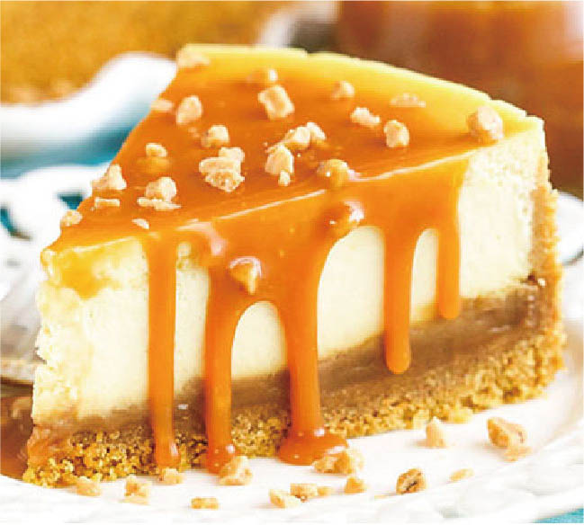

Salted Caramel Corn Cheesecake
Ingredients
1 slice of NY Cheesecake, Caramel Popcorn, Caramel Sauce, Coarse Sea Salt, Toffee Bits
Directions
Step 1: Plate 1 slice of NY Cheesecake.
Step 2: Drizzle with caramel sauce.
Step 3: Top with your favorite caramel corn.
Step 4: Spoon on toffee bits.
Step 5: Lightly sprinkle the entire plate with coarse sea salt.